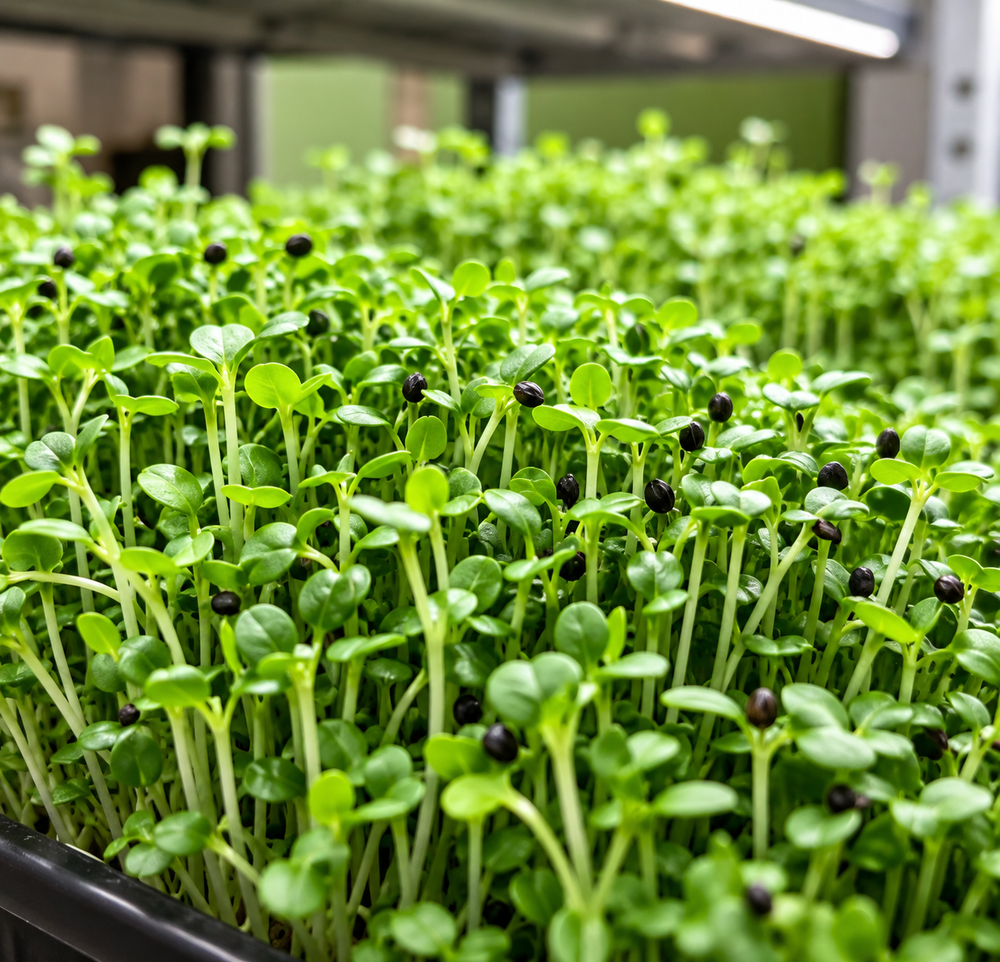
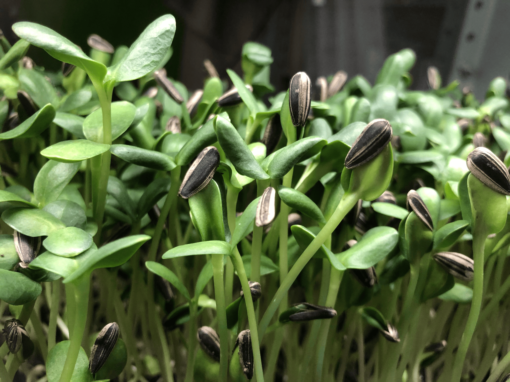
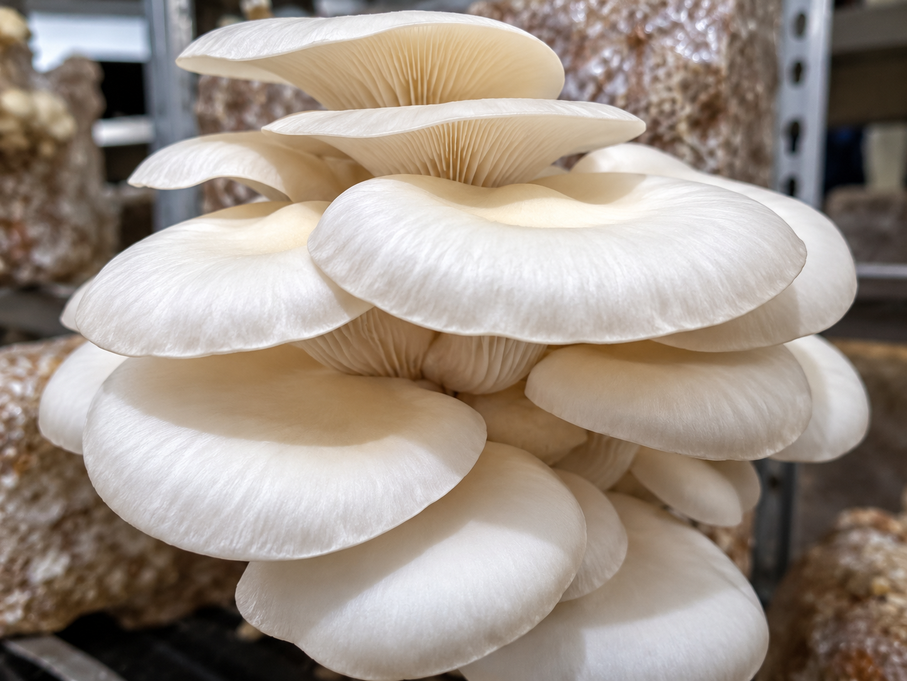
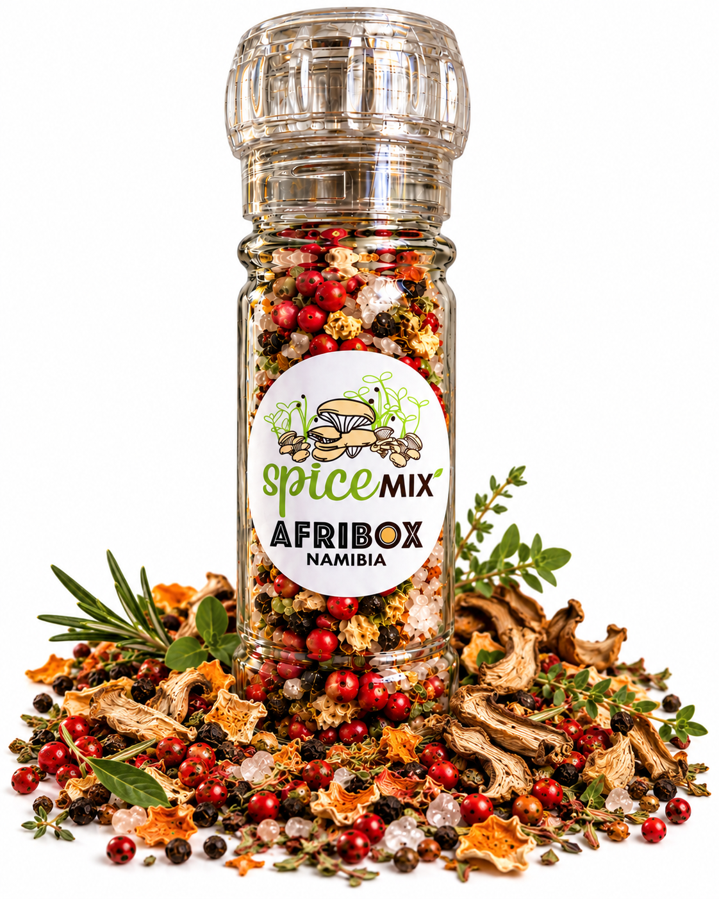
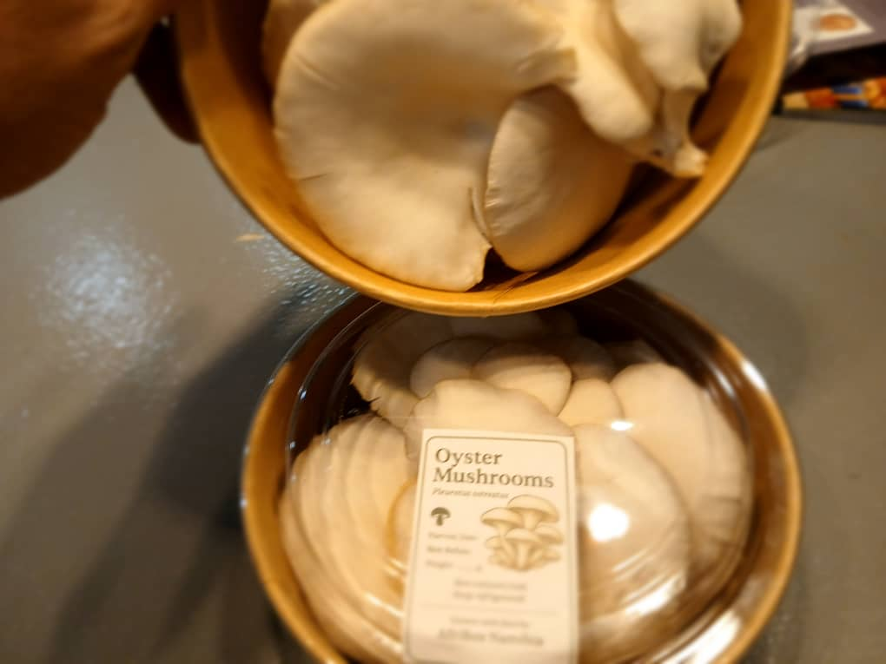

Microgreens
Fresh, vibrant young greens that bring flavour, colour and texture to everyday meals.
Fresh microgreens, oyster mushrooms and thoughtfully crafted products grown with care by AfriBox Namibia.
EXPLORE AFRIBOX
AfriBox is a locally focused growing project in Grootfontein, Namibia. We grow fresh microgreens and oyster mushrooms and find thoughtful ways to make the most of what we produce — creating fresh food with less waste and more purpose.

Fresh, vibrant young greens that bring flavour, colour and texture to everyday meals.

Locally grown oyster mushrooms, carefully cultivated and harvested fresh.

A handcrafted blend featuring dried AfriBox mushrooms and microgreens, greenhouse herbs and Namibian salt.

Our Spice Mix grew from a simple idea: fresh produce that isn't sold shouldn't have to go to waste. Selected mushrooms and microgreens are dried and combined with herbs and Namibian salt to create something new from what we already grow.
Grow with care. Use with purpose.
Microgreens are young edible plants harvested at an early stage. They're an easy way to add fresh flavour, texture and colour to salads, sandwiches, eggs and everyday meals.
Availability may vary as our produce is grown and harvested in small batches.
Want to ask what's currently available, place an order, or learn more about our products? Get in touch with us.
WhatsApp: 081 477 1036
Email: afriboxnamibia@gmail.com
Grootfontein, Namibia